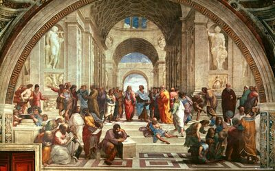
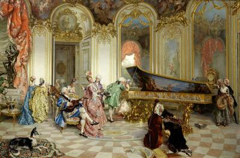
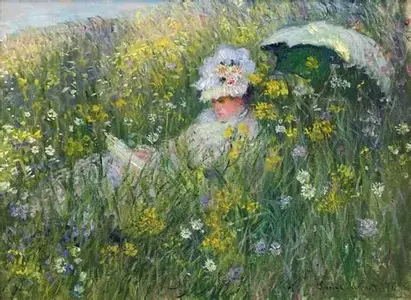

Відродження
Характеризується зверненням до античної спадщини, гуманізмом, вивченням перспективи та анатомії.
Представники: Леонардо да Вінчі, Мікеланджело, Рафаель
Бароко
Пишність, динамізм, емоційність, контрасти світла й тіні.
Представники: Караваджо, Рембрандт, Рубенс
Імпресіонізм
Праця на пленері, передача миттєвості, використання світлих кольорів.
Представники: Моне, Ренуар, Дега
Сучасні стилі
- Абстракціонізм
- Сюрреалізм
- Поп-арт
- Мінімалізм
- Концептуальне мистецтво